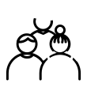
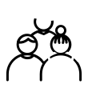

Listes des pictogrammes présents sur les différens sites Loire-Atlantique et sites satellites.
Listes des pictogrammes présents dans les encadrés des politiques publiques. La couleur du fond peut changer en fonction des sujets évoqués.


 
